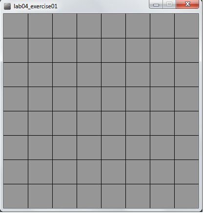
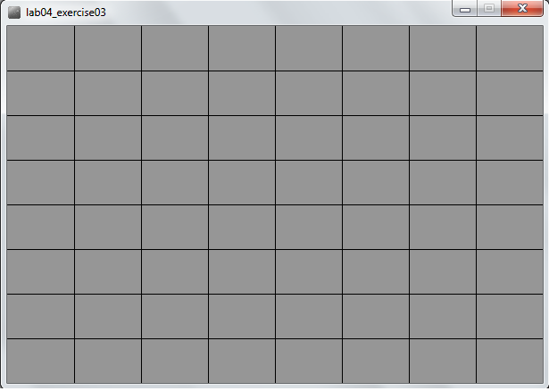
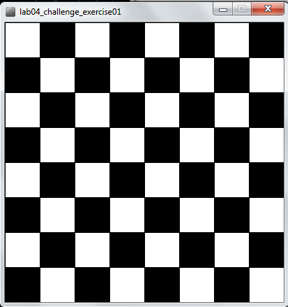

Objectives
On completion of this lab you should understand variable scope and be able to code static drawings using for and while loops.
Solution to Previous Lab
The solution for the previous lab can be found here.
Remember our lab advice!
- Your labs are not a race to be the first student finished.
- It is very important that you:
- take your time.
- read the instructions carefully.
- ask your lecturer to explain concepts that you don't understand; that is what we are here for!
- attend ''ALL'' your classes; attendance will be taken.
- where code is given in labs, don't cut and paste it; maximise your learning by typing the code in.
Variable scope (local and global)
- In this step, we will implement the code examples 4.1 - 4.3 from your lectures.
Understanding variable scope
Create a new Processing sketch in your workspace and call it lab04_variable_scope.
Enter the following code into your sketchbook (don't copy and paste...write the code out):
void setup()
{
size(500,400);
background(0);
stroke(255);
fill(45,45,45);
}
void draw() {
int diameter = 100;
if (mousePressed)
{
diameter = diameter – 10;
background(0);
}
ellipse(mouseX, mouseY, diameter, diameter);
}Run your code. Is your circle reducing in size? Do you see the problem?
- The diameter variable is declared in the draw() function i.e. it is a local variable.
- It is only “alive” while the draw() function is running.
- Each time the draw() function:
- finishes running, the diameter variable is destroyed.
- is called, the diameter variable is re-created.
- To fix this, change your code so that it looks like this:
int diameter = 100;
void setup()
{
size(500,400);
background(0);
stroke(255);
fill(45,45,45);
}
void draw()
{
if (mousePressed)
{
diameter = diameter - 10;
background(0);
}
ellipse(mouseX, mouseY, diameter, diameter);
}Run your code. Does it work as you would expect?
There is a problem with the code. In the ellipse method, the width and height are absolute values (the negative sign is dropped).
To handle this logic bug, we need to stop reducing the diameter by 10 when we reach a certain value, say 20.
Implement this code and test your code again:
int diameter = 100;
void setup()
{
size(500,400);
background(0);
stroke(255);
fill(45,45,45);
}
void draw()
{
if ((mousePressed) && (diameter > 20))
{
diameter = diameter - 10;
background(0);
}
ellipse(mouseX, mouseY, diameter, diameter);
}Did you notice that it seems the reduction is larger than 10 when we press the mouse?
Why? The default frame rate is 60 refreshes of the screen per second i.e. draw() is called 60 times per second.
You can change the frame rate by calling the frameRate() function.
Now try this solution:
int diameter = 100;
void setup() {
size(500,400);
background(0);
stroke(255);
fill(45,45,45);
frameRate(20);
}
void draw() {
if ((mousePressed) && (diameter > 20)){
diameter = diameter - 10;
background(0);
}
ellipse(mouseX, mouseY, diameter, diameter);
}While Loops
- In this step, we will implement the while loop examples from your lectures.
For Loop
Create a new Processing sketch in your workspace and call it lab04_while_loops.
Enter the following code into your sketchbook (don't copy and paste...write the code out):
int yCoordinate = 60;
size(600, 300);
background(102);
fill(255);
noStroke();
int i = 0;
while (i < 4)
{
rect(50, yCoordinate, 500, 10);
yCoordinate = yCoordinate + 20;
i++;
}Run your code. This code should draw four white horizontal blocks.
Does it work as you would expect?
Same loop, but without the yCoordinate variable
Update the above code by removing the yCoordinate variable and updating the for loop accordingly (the solution is in your lectures, but try to do this without looking at the slides).
Does it work the same?
Nested While Loops
Create a new Processing sketch in your workspace and call it lab04_nested_while_loops.
Enter the following code into your sketchbook (don't copy and paste...write the code out):
int i = 0;
while ( i < 4 ) {
int j = 0;
while (j < 4 ) {
println("The value of i is: " + i + " and j is: " + j);
j++;
}
i++;
}Run your code. This code should print out a series of lines to your console.
Look at these lines, in particular, look at the values printed for i and for j. Do you understand the mechanics of how the nested while loop works?
For loops
- In this step, we will implement the while loop examples from your lectures.
Convert a while loop to a for loop
Create a new Processing sketch in your workspace and call it lab04_for_loop.
The following code uses a while loop. Rewrite it so that it uses a for loop instead.
int yCoordinate = 60;
size(600, 300);
background(102);
fill(255);
noStroke();
int i = 0;
while (i < 4 )
{
rect(50, yCoordinate, 500, 10);
yCoordinate += 20;
i++;
}- Run your code. Does it work as you would expect?
Remove the yCoordinate variable.
- Now that you have a for loop working correctly, change (called refactoring in programming) the code so that it no longer has the variable yCoordinate. Update the while loop to ensure that the yCoordinate functionality is not lost.
Rewriting the while nested loop
Create a new Processing sketch in your workspace and call it lab04_nested_for_loops.
Refactor the code balow (a nested loop using while) to a nested loop using the for loop.
Enter the following code into your sketchbook (don't copy and paste...write the code out):
int i = 0;
while ( i < 4 ) {
int j = 0;
while (j < 4 ) {
println("The value of i is: " + i + " and j is: " + j);
j++;
}
i++;
}- Run your code. Does it work as you would expect?
Exercises
For each exercise listed below, open a new sketchbook.
You may need to visit the Processing website for additional information.
When you are finished all your exercises, zip all your exercises into one file and upload them into lab04 dropbox in Moodle.
Exercise 1 (static drawing)
Create a display window of 400x400 with a grey background.
In the setup() method, use a for loop to draw a chessboard (for this exercise, use the line() method).
A chess board is an 8x8 grid and should look like the screen shot below:

Exercise 2 (static drawing)
- Create a new sketch and re-write the Exercise 1 code to use while loops instead of for loops.
Exercise 3 (static drawing)
- Create a new sketch and re-write the Exercise 1 code so that the chess board is drawn correctly regardless of the width and height of the display window.

Console Exercise 1
Create a new sketch and use a while loop and the println method to print hello 5 times to the console.
When you have it working using the while loop, refactor your code to use a for loop.
Console Exercise 2
Create a new sketch and use a for loop and the println method to print the numbers 1 to 10 to the console.
When you have it working using the for loop, refactor your code to use a while loop.
Console Exercise 3
Create a new sketch and use a while loop and the println method to print 10, 9, 8, 7, 6, 5, 4, 3, 2, 1, blast off to the console.
When you have it working using the while loop, refactor your code to use a for loop.
Console Exercise 4
Create a new sketch and use a for loop and the println method to print all the even numbers between 2 and 10 to the console.
When you have it working using the for loop, refactor your code to use a while loop.
Challenge Exercise 1 (static drawing)
- Create a new sketch and, using two while loops, draw this image:

- When you have it working using while loops, convert the code to use for loops.
Challenge Exercise 2 (static drawing)
- Create a new sketch and draw your chessboard on a 400x400 window using the rect() method instead of the line() method. You will need a nested for loop to do this.
Challenge Exercise 3 (static drawing)
- Create a new sketch and using the code from Challenge Exercise 2, try to colour every subsequent square in a darker colour of gray, as shown in the image below:

Note: You will need to read up on the modulo (%) operator in order to do this exercise. This is quite a difficult exercise, so don't worry if you can't get it working.